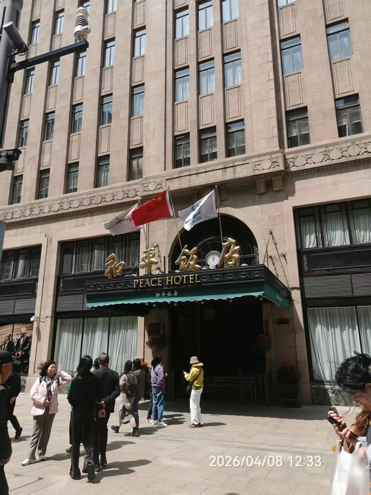
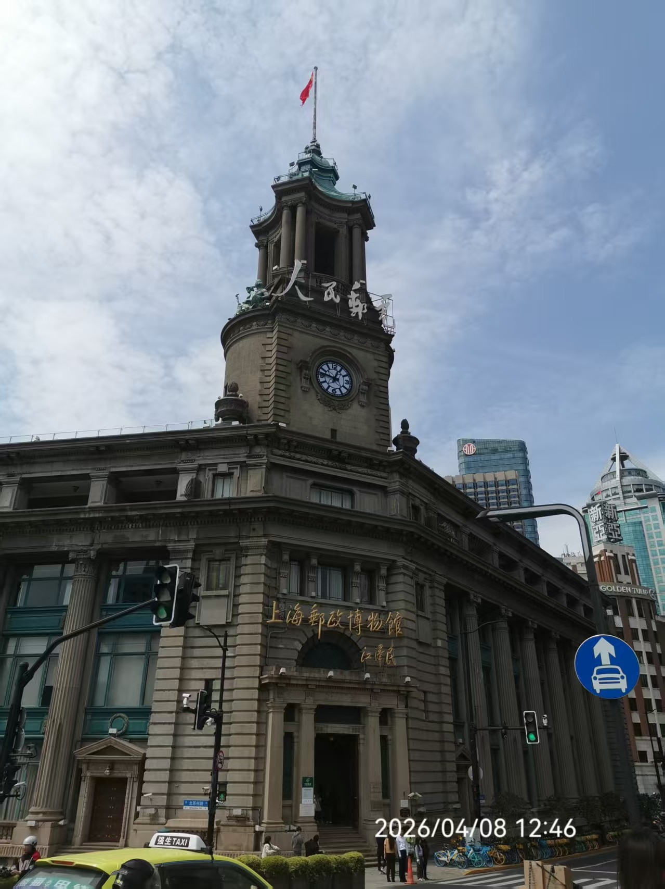
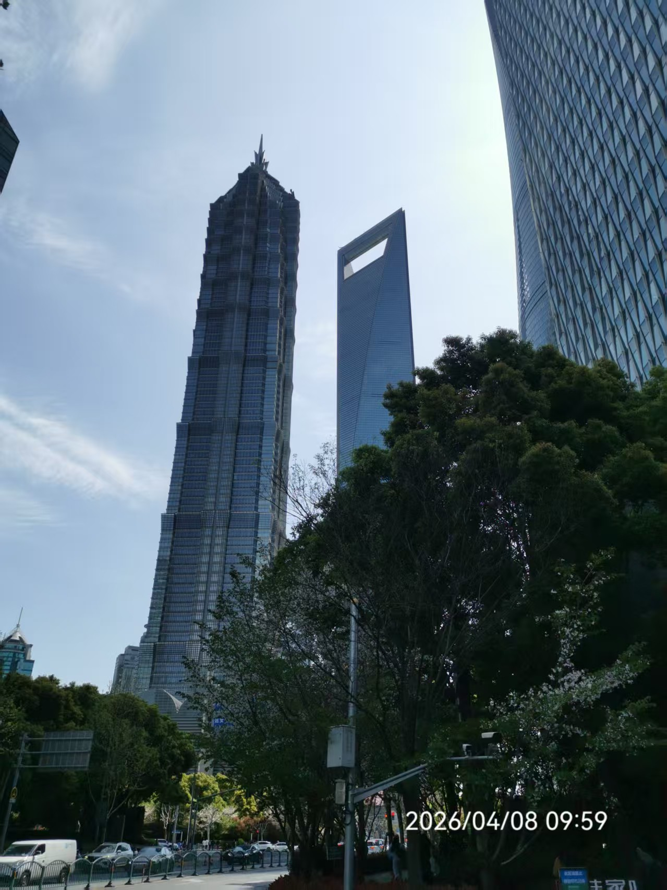

Metropolis & History
上海：魔都的光影叙事
2026年4月8日，外滩的风依然带着一丝江水的潮气。
上海最迷人的地方，在于它那种“折叠感”。你可以在苏州河畔触摸到百年前的邮政钟楼，也可以在步行街口感受和平饭店的贵族气息，而一抬头，对岸的摩天大楼正以不可思议的高度挑战着天空。
在这里，每一次按下快门，记录的都是时代的交响。

繁华尽处：和平饭店
站在南京东路口，这座墨绿色尖顶的建筑就像一位沉默的绅士。国旗在春风中飘扬，它见证了外滩的百年浮沉，也见证了今日的盛世繁华。

时空钟声：邮政博物馆
巴洛克风格的钟楼矗立在苏州河畔。每一次指针的跳动，仿佛都在回响着那个书信慢、车马远的时代。在这里，历史不再是课本上的文字，而是触手可及的石柱与雕花。

云端雄心：陆家嘴三件套
从绿意葱茏的树影中仰望，金茂大厦、环球金融中心与上海中心直冲云霄。这不仅仅是建筑的高度，更是这座城市向上探索的雄心与勇气。